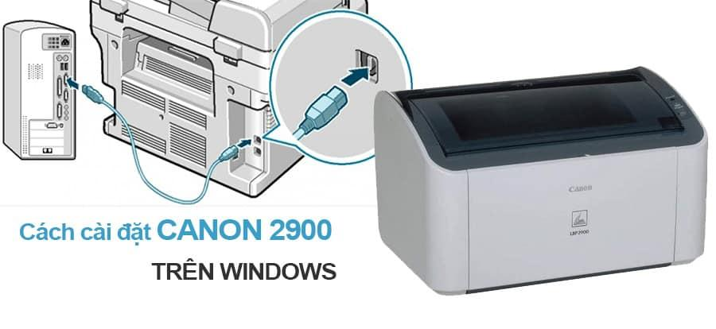
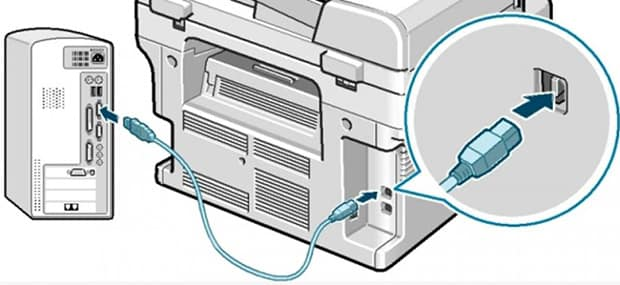
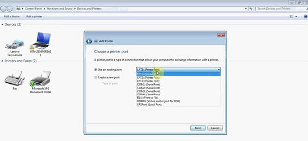

Cách cài và tải driver máy in canon 2900

Canon 2900 xuất hiện đã lâu, nhưng nay còn nhiều người không biết cài đặt và download driver. (đặc biêt tải driver máy in canon 2900 cho win 7 32 bit)
Napmucnhanh24h.com sẽ hướng dẫn các bạn cách cài đặt máy in trên hệ điều hành Windows. Do máy in có rất nhiều hãng nhưng cách cài đặt tương đối giống nhau, nên chúng tôi sẽ hướng dẫn các bạn cách cài đặt cho loại máy in thông dụng nhất là Canon LBP 2900 lên hệ điều hành Windows 7 (với những phiên bản Windows khác như Win XP, Win 8, Win10…bạn chỉ cần down driver tương ứng rồi tiến hành cài đặt giống trong bài).
Bước 1: Bạn cần tải driver máy in canon 2900 cho win 7 32 bit, 64 bit hoặc…
Tương ứng với từng hệ điều hành mà bạn đang sử dụng sẽ có một driver khác nhau. Ở đây, chúng tôi cung cấp cho bạn link để tải driver máy in canon 2900 cho win 7 32 bit và Win 8, Win Xp.. và nhiều phiên bản khác…
- Tải driver máy in canon 2900 cho win 7 32 bit tại đây.
- Tải driver máy in canon 2900 cho win 7 64 bit tại đây.
- Tải driver máy in canon 2900 cho win 8 tại đây.
Bước 2: Kết nôi máy in và cáp
Tiến hành kết nối máy in Canon LBP 2900 với máy tính bằng cáp (đi kèm theo máy in).

tải và cài driver máy in canon 2900 cho win 7 32 bit, Win8, Win..
Bước 3: Cài đặt Driver Canon 2900 vào Windows
Bắt đầu cài đặt driver máy in vào máy tính (vừa được download về ở bước 1). Bạn chỉ cần bấm Next cho đến khi tiến trình cài đặt kết thúc rồi bấm Finish. Lưu ý là, nếu dây cáp bị lỏng hoặc không được cắm vào, bạn sẽ không thể cài đặt được driver vào máy tính.

Cách cài đặt máy in Canon LBP 2900 trên windows
Bước 4: Hoàn tất cài đặt driver
Sau khi cài đặt xong, bạn cần restart lại máy tính để hệ điều hành có thể nhận được tín hiệu từ máy in Canon 2900.
Bước 5: Cài đặt mặt định và in thử
Vào Control Panel > Printer > nhấp chuột phải vào biểu tượng máy in Canon LBP 2900, sau đó chọn Set as default printer. Vậy là bạn đã hoàn thành quá trình cài đặt máy in Canon 2900 cho Windows và có thể sử dụng máy in một cách bình thường.
Napmucnhanh24h chuyên nạp mực khu vực Bình Tân, Tân Phú, Tân Bình, Quận 3, Quận 6. Rất hân hạnh phục vụ!
Cần nạp mực hoặc sửa máy in tận nơi? Mực In Trường Phát có mặt trong 30 phút tại TP.HCM — in test trước khi tính tiền, bảo hành 1 tháng.
0908.327.123 · 0819.007.394 (Zalo cả 2 số)